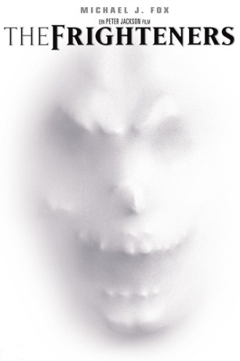
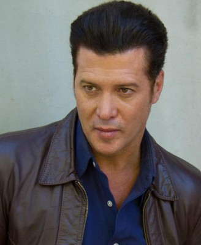
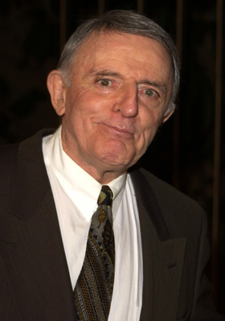
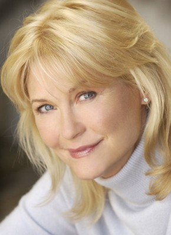
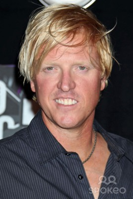
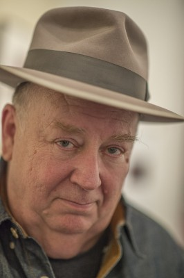
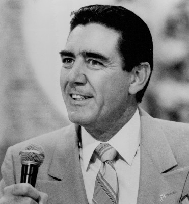
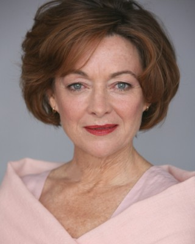
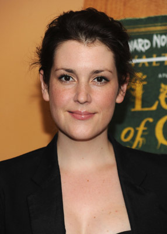
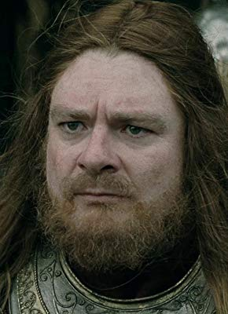

#7607 The Frighteners
 
 IMDB-Wertung: 7.1 / 10
IMDB-Wertung: 7.1 / 10  Metascore: 0
Metascore: 0 
Frank Bannister ist Geisterjäger, doch jedermann hält ihn für einen gewieften Betrüger. Das stimmt auch, doch Frank ist tatsächlich mit Geistern im Bunde, die er seit einem Autounfall, bei dem seine Frau ums Leben kam, sehen kann. Drei davon wohnen noch bei ihm: Cyrus, Stuart und der Richter, dem allerdings schon das Ektoplasma ausgeht. Da gibt es plötzlich eine mysteriöse Sterbewelle in der Stadt, bei der den Opfern das Herz regelrecht zerquetscht wurde. Frank ist ob seiner Kräfte in der unglücklichen Lage, den geisterhaften Killer, der wie der Sensenmann persönlich aussieht, auszumachen, sieht er doch schon an den Opfern das Zeichen ihres bevorstehenden Todes. Da bittet ihn Lucy Lynskey um Hilfe, deren Mann zu den Opfern gehört, kurz nachdem Frank die beiden übers Ohr gehauen hatte. Tatsächlich hat Frank nun auch ihren Mann Ray als Geist an den Hacken...
Jahr: 1996
Dauer: 109 Minuten
FSK: 16
Land: Neuseeland Studio: UIPTonspuren: DTS - ,
Untertitel: Deutsch,
Auflösung: 1080p (1920x816) Größe: 8468 MB
Genre: Horror, Komödie, Fantasy
Regisseur:  Peter Jackson
Peter Jackson
Drehbuch: Fran Walsh
Soundtrack: Donald Roeser
Darsteller:
 Michael J. Fox als Frank Bannister
Michael J. Fox als Frank Bannister- Trini Alvarado als Dr. Lucy Lynskey
-  Peter Dobson als Ray Lynskey
-  John Astin als The Judge
 Jeffrey Combs als Milton Dammers
Jeffrey Combs als Milton Dammers-  Dee Wallace als Patricia Ann Bradley
-  Jake Busey als Johnny Bartlett
 Chi McBride als Cyrus
Chi McBride als Cyrus- Jim Fyfe als Stuart, Bannister's Ghostly Assistant
-  Troy Evans als Sheriff Walt Perry
-  R. Lee Ermey als Sgt. Hiles
-  Elizabeth Hawthorne als Magda Rees-Jones
- Angela Bloomfield als Debra Bannister
- John Sumner als Deputy
- Jim McLarty als Deputy
- Anthony Ray Parker als Deputy
- Paul Yates als Deputy
-  Melanie Lynskey als Deputy
- Stuart Devenie als Museum Curator
- Leslie Wing als Mrs. Waterhouse
 Peter Jackson als Man with Piercings , uncredited
Peter Jackson als Man with Piercings , uncredited- Isaac Lucas als Museum Guest , uncredited
- Julianna McCarthy als Old Lady Bradley
- Desmond Kelly als Harry Sinclair
- Jonathan Blick als Steve Bayliss
- Todd Rippon als Deputy
- Michael Robinson als Deputy
-  John Leigh als Bryce Campbell
- Nicola Cliff als Young Patricia
- Ken Blackburn als Dr. Kammins
- Genevieve Westcott als TV Presenter
- K.C. Kelly als Doctor
- Leslie Klein als Sylvia
- Frank Edwards als Resuscitating Man
- Alan O'Leary als The Waiter
- Danny Lineham als Barry
- Charlie McClellan als Reporter
- William Pomeroy als Jacob Platz
- George Port als Orderly
- Billy Jackson als Baby in Bouncer
- Sophie Watkins als Nursery Baby
- Taea Hartwell als Nursery Baby
- Max Grover als Nursery Baby
- George Grover als Nursery Baby
- Tony Hopkins als Hospital Patient
- Lewis Martin als Hospital Patient
- Clay Nelson als Passerby
- Matthew Chamberlain als Passerby
- Vivienne Kaplan als Nun
- Liz Mullane als Nun
Datei: X:\1996\Frighteners, The (1996, FSK16, 1920x816).mkv seit 23.11.2017
Festplatte: HD 1996-2002
 Es gibt insgesamt 78 Filme in der Gruppe '1996'
Es gibt insgesamt 78 Filme in der Gruppe '1996'